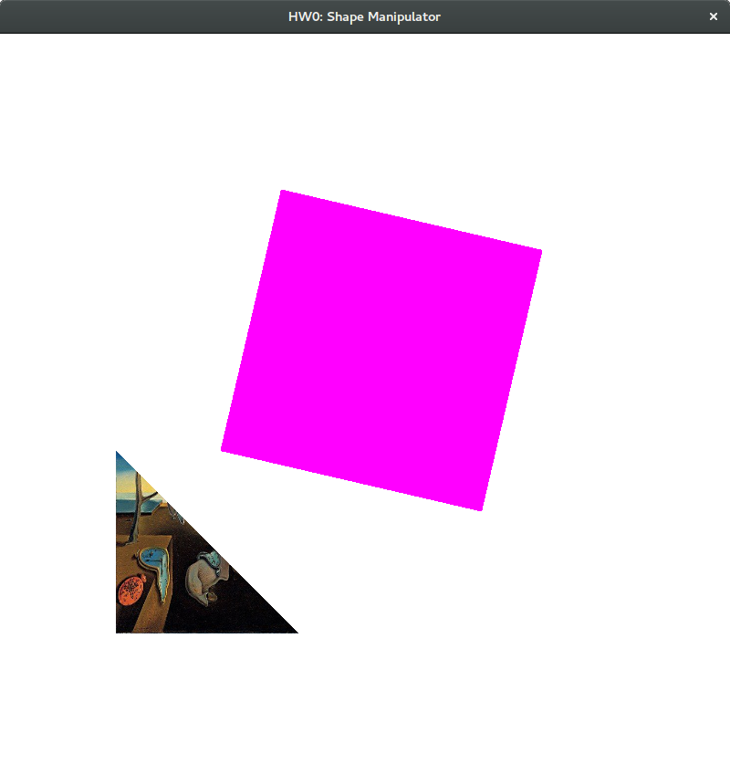

Shape Manipulator
Description
The goal of this assignment was primarly to get OpenGL and SDL2 compiled and running. Full points were given if you drew a single square that you could translate, scale, and rotate with your mouse. I ended up taking it a step further and doing a lot of extra things. See the features section for the details.
Difficulties
The main difficulties I ran into were using OpenGL by itself. I've used OpenGL before, but it's always been abstracted away into nice classes where I only have to know the concepts. This is the first time I have had to do all the nitty gritty things myself. We also haven't learned about most of this, so I had to look up a lot of things, like vaos, vbos, and how to do post-processing things like the edge detection. The edge detection was probably the most difficult. I did it by having one square that is textured as monalisa. I render that square / screen to a framebuffer, and then texture square #2 by sending the framebuffer's texture through a different fragment shader that I wrote to do the edge detection.
Code
Download zip file of codeTools Used
- Modern OpenGL 3 for drawing and shading
- SDL2 for the windowing and user input
Features
- Variable number of squares and triangles
- Each object can be translated, scaled, and rotated
- Each object can be textured
- If an object is not textured, it turns green when translating, red when rotating, and purple when scaling
- Edge detection shader (see monalisa square)
- Animation (press spacebar to rotate monalisa)
- Background change (press b)
- Maintaining object shape and size when window is scaled
- Can uncomment and recompile for emboss filter as well (see buildings pic)
Images:
